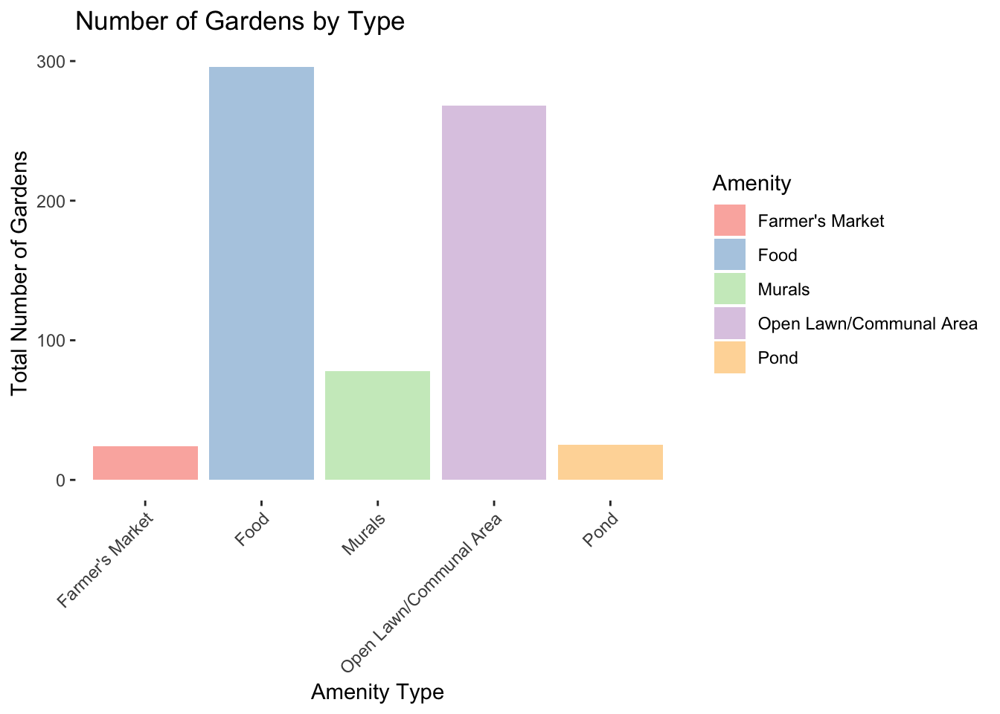
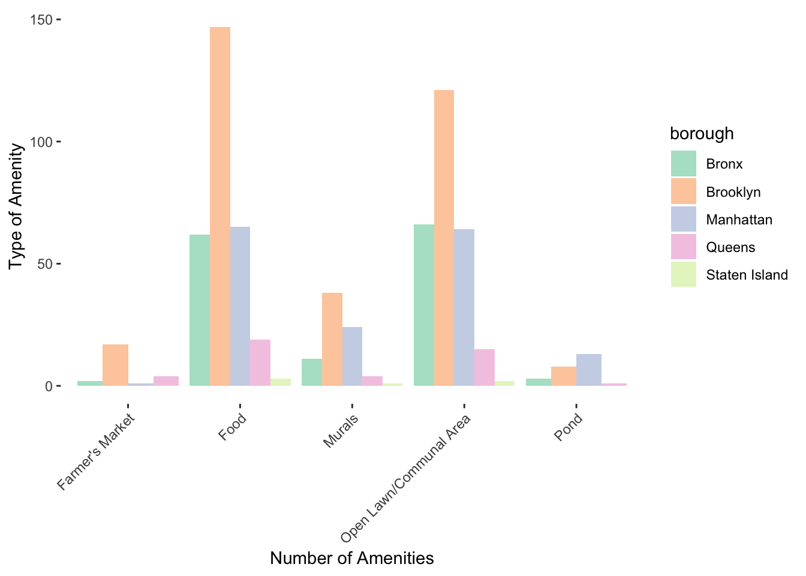
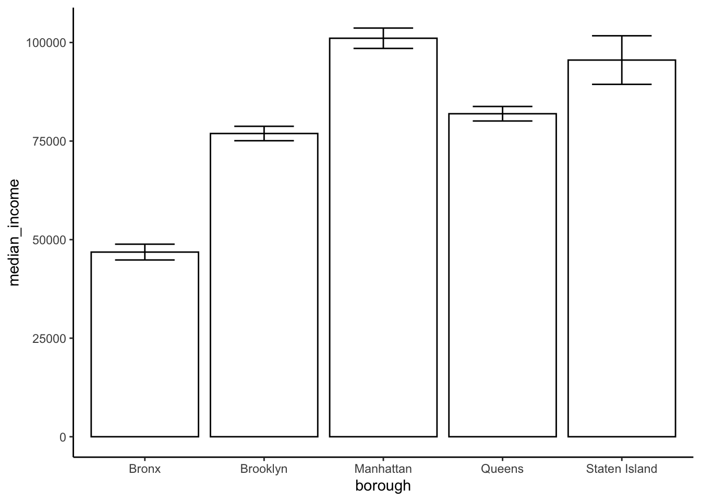

library(readr)
library(tidyverse)
library(dplyr)
library(ggplot2)
library(stringr)
library(httr)
library(plotly)
library(nnet)
options(scipen = 999) # Turn off scientific notation globally
gardeninfo = read_csv("./GreenThumb_Garden_Info.csv") %>% janitor::clean_names()
gardenamenities = read_csv("./GreenThumb_Site_Visits.csv") %>% janitor::clean_names()
info_tidy = gardeninfo %>% select(borough, gardenname, parksid, status, juris) %>%
mutate(borough = recode(borough,
"B" = "Brooklyn",
"X" = "Bronx",
"M" = "Manhattan",
"Q" = "Queens",
"R" = "Staten Island"))
amenities_tidy = gardenamenities %>% select(parks_id, open_lawn_or_communal_area, murals, farmers_market, pond, food, inspection_id) %>% rename(parksid = parks_id)
#merging data
garden_merged = full_join(amenities_tidy, info_tidy, by= "parksid", relationship = "many-to-many")
#removing duplicates
#info_tidy %>% select(parksid) %>% duplicated()
#amenities_tidy %>% select(parksid) %>% unique()
#garden_merged[duplicated(garden_merged) | duplicated(garden_merged, fromLast = TRUE), ]
garden_merged = garden_merged[!duplicated(garden_merged), ]
#creating amenity count table
amenity_count = garden_merged %>%
pivot_longer(cols = c(open_lawn_or_communal_area, murals, farmers_market, pond, food), names_to = "Amenity", values_to = "True_False") %>%
filter(True_False == TRUE) %>%
group_by(Amenity) %>%
count(name = "total_gardens")
#amenity count by borough
amenity_count_borough = garden_merged %>%
pivot_longer(cols = c(open_lawn_or_communal_area, murals, farmers_market, pond, food), names_to = "Amenity", values_to = "True_False") %>%
select(borough, Amenity, True_False) %>%
filter(True_False == TRUE) %>%
group_by(borough, Amenity) %>%
summarise(num_amenities = n(), .groups = "drop") %>%
group_by(borough) %>%
mutate(total_amenities = sum(num_amenities)) %>%
ungroup()
table1 = amenity_count_borough %>% select(borough, total_amenities) %>% unique() %>%
knitr::kable(col.names = c("Borough", "Total Amenities"),
label = "Total Number of Garden Amenities by Borough")
table1| Borough | Total Amenities |
|---|---|
| Bronx | 144 |
| Brooklyn | 331 |
| Manhattan | 167 |
| Queens | 43 |
| Staten Island | 6 |
DATA VIZ 1 histogram of the number of gardens with each of the features: open lawn/communal area, murals, pond, farmer’s market, food
plot1 = amenity_count %>%
mutate(Amenity = recode(Amenity,
"farmers_market" = "Farmer's Market",
"food" = "Food",
"murals" = "Murals",
"open_lawn_or_communal_area" = "Open Lawn/Communal Area",
"pond" = "Pond")) %>%
ggplot(aes(x = Amenity, y = total_gardens, fill = Amenity)) +
geom_col() +
labs(title = "Number of Gardens by Type",
x = "Amenity Type",
y = "Total Number of Gardens") +
scale_fill_brewer(palette = "Pastel1") +
theme(panel.background = element_rect(fill = "transparent")) +
theme(axis.text.x = element_text(angle = 45, hjust = 1))
plot1 DATA VIZ 2 Amenity Type by borough, facet histogram
plot2 = amenity_count_borough %>%
mutate(Amenity = recode(Amenity,
"farmers_market" = "Farmer's Market",
"food" = "Food",
"murals" = "Murals",
"open_lawn_or_communal_area" = "Open Lawn/Communal Area",
"pond" = "Pond")) %>%
ggplot(aes(x = Amenity, y = num_amenities, fill = borough)) +
geom_col(position = "dodge") +
labs(x = "Number of Amenities", y = "Type of Amenity") +
theme(axis.text.x = element_text(angle = 45, hjust = 1)) +
scale_fill_brewer(palette = "Pastel2") +
theme(panel.background = element_rect(fill = "transparent"))
plot2
DATA VIZ 3 Income Distribution Dot Plot
#importing and tidying income dataset
income = read_csv("./censusincome2024.csv") %>% janitor::clean_names()
income_borough = income[2, ] %>%
select(bronx_county_new_york_median_income_dollars_estimate,
bronx_county_new_york_median_income_dollars_margin_of_error,
kings_county_new_york_median_income_dollars_estimate,
kings_county_new_york_median_income_dollars_margin_of_error,
new_york_county_new_york_median_income_dollars_estimate,
new_york_county_new_york_median_income_dollars_margin_of_error,
queens_county_new_york_median_income_dollars_estimate,
queens_county_new_york_median_income_dollars_margin_of_error,
richmond_county_new_york_median_income_dollars_estimate,
richmond_county_new_york_median_income_dollars_margin_of_error) %>%
mutate_all(as.character) %>%
pivot_longer(cols = everything(), names_to = "column_name", values_to = "value") %>%
mutate(
borough = str_extract(column_name, "^[a-z_]+(?=_county)"),
metric = ifelse(str_detect(column_name, "estimate"), "median_income", "margin_of_error")
) %>%
select(-column_name) %>%
pivot_wider(
names_from = metric,
values_from = value
) %>%
mutate(borough = recode(borough, bronx = 'Bronx', kings = 'Brooklyn', new_york = 'Manhattan', queens = 'Queens', richmond = 'Staten Island' ))
#converting to numeric
income_borough <- income_borough %>%
mutate(median_income = as.numeric(gsub(",", "", median_income))) %>%
mutate(margin_of_error = as.numeric(gsub("[±,]", "", margin_of_error)))
#add columns for MOE
income_borough = income_borough %>% mutate(
lower_margin = (median_income-margin_of_error),
upper_margin = (median_income+margin_of_error)
)
#income dsitribution dot plot with MoE
plot3 = income_borough %>%
ggplot(aes(x= borough, y = median_income)) +
geom_point() +
geom_errorbar(aes(ymax = upper_margin, ymin = lower_margin, width = 0.1)) +
theme_classic()
plot3
Poisson
#POISSON ANALYSIS
#isolating total amenities per borough
total_borough_amenity = select(amenity_count_borough, borough, total_amenities)
total_borough_amenity = total_borough_amenity[!duplicated(total_borough_amenity), ]
#creating new data frame for regression
poisson_df = left_join(income_borough, total_borough_amenity, by="borough") %>% select(borough, median_income, total_amenities)
# Fit the Poisson regression model
poisson_model <- glm(total_amenities ~ median_income,
family = poisson(link = "log"),
data = poisson_df)
table2 = poisson_model %>% broom::tidy() |>
mutate(OR = exp(estimate)) |>
select(term, log_OR = estimate, OR, p.value) |>
knitr::kable()
table2| term | log_OR | OR | p.value |
|---|---|---|---|
| (Intercept) | 5.6508878 | 284.5439597 | 0.0000000 |
| median_income | -0.0000092 | 0.9999908 | 0.0000013 |
Multinomial Regression
multinom_df = left_join(garden_merged, income_borough, by="borough") %>% select(parksid, pond, status, juris, borough, median_income) %>%
filter(juris == "DPR") %>%
filter(status == "Active" | status == "Not GreenThumb") %>%
filter(!(borough == "Staten Island")) %>%
mutate(pond = ifelse(pond, "Yes", "No")) %>%
mutate(status = fct_relevel(status, "Not GreenThumb")) %>%
mutate(borough = fct_relevel(borough, "Bronx")) %>%
drop_na()
#multinom_df %>% select(status, juris) %>% group_by(status) %>% count()
#multinom_df %>% group_by(borough, pond) %>% count()
multinom_model = nnet::multinom(pond ~ status + median_income + borough, data = multinom_df)## # weights: 7 (6 variable)
## initial value 241.215219
## iter 10 value 86.506329
## final value 86.085779
## convergedtable3 = multinom_model %>% broom::tidy() |>
mutate(OR = exp(estimate)) |>
select(term, log_OR = estimate, OR, p.value) |>
knitr::kable()
table3| term | log_OR | OR | p.value |
|---|---|---|---|
| (Intercept) | -1.5406990 | 0.2142313 | 0.0000000 |
| statusActive | -1.5406990 | 0.2142313 | 0.0000000 |
| median_income | -0.0000002 | 0.9999998 | 0.9305107 |
| boroughBrooklyn | 0.1463642 | 1.1576177 | 0.0000000 |
| boroughManhattan | 1.2732599 | 3.5724794 | 0.0000000 |
| boroughQueens | -0.0370497 | 0.9636282 | 0.0000000 |